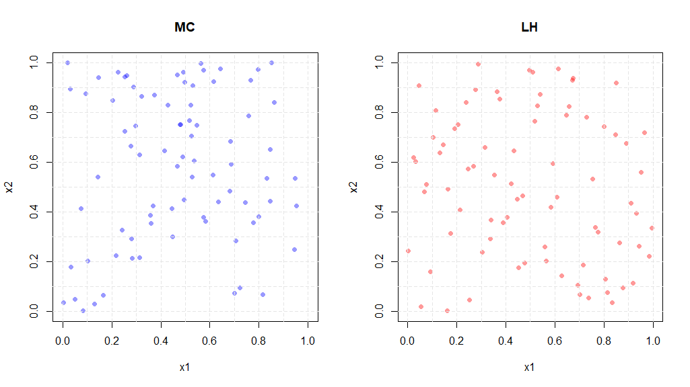
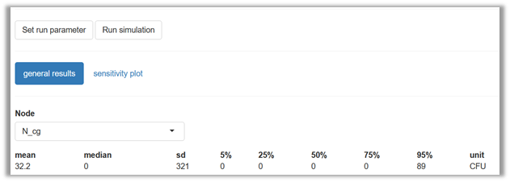
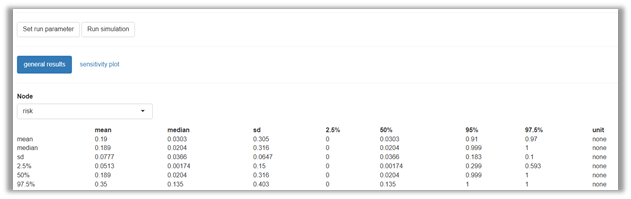
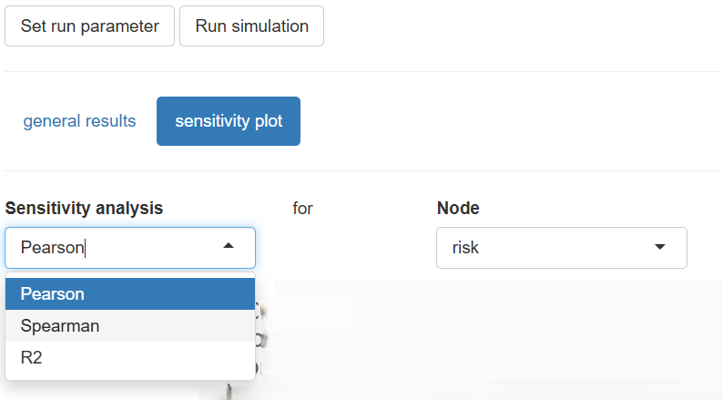

Running a simulation
Start the simulation to change the default simulation settings and get the results of your model.

Simulation settings
Before running the simulation, you may set run parameters to increase the efficiency and control the reproducibility of your model. Depending on whether your model involves a one-dimensional (1D) or two-dimensional (2D) simulation, the number of replicates is given in general or separately for variability and uncertainty (Figure 2).


| Sampling technique | Choose between Monte-Carlo (default) and latin hypercube (enhanced efficiency) |
| Number of replicates* | Enter the number of random samples for all distribution nodes (1D model) |
| Number of replicates* for variability | Enter the number of random samples for nodes reflecting variability (2D model) |
| Number of replicates* for uncertainty | Enter the number of random samples for nodes reflecting uncertainty (2D model) |
| Seed value | Enter an integer number, which will allow to reproduce the random sampling results |
| Type | Select quantile algorithm for calculating the percentiles |
| * | “Monte Carlo iterations” will be replaced with “replicates” since this applies to both Monte Carlo and latin hypercube sampling. |
The setting of the Sampling technique, Monte Carlo (MC) versus mid latin hypercube (LH), is a technicality that can be ignored unless you have a specific preference (read more about sampling method below).
The Number of replicates allows you to to set the sample size for the simulation that is adequate for the modelling task (read more about number of replicates below).
Documentation of the Seed value allows you to exactly reproduce the numerical results of your model. This is possible because the random number generation uses a fully deterministic process. However, for practical purposes, the numbers generated using both the MC and LH algorithms can be assumed to be random numbers.
The default setting of the Type for calculating percentiles follows the recommendation given by the developers of R’s “quantile” function (see see documentation), which is part of the R “stats” package (R Core Team, 2024. R: A Language and Environment for Statistical Computing. R Foundation for Statistical Computing, Vienna, Austria. https://www.R-project.org/).
The shiny rrisk server allocates a fixed size of memory to run the simulation. The amount of memory used is influenced by the number of nodes and the number of samples requested in the variability and uncertainty dimensions.
Since the number of nodes is part of the structure of the model, the amount of memory used will mainly depend of the number of random samples. Usually, the number of samples is selected based on standard “magic” numbers, like 100, 1000, 10000, etc. However, there are some approaches that can be followed as a guidance to estimate an approximate number. For this you need the probability of the event being modelled as outcome (which is typically low in risk and exposure assessments) and the minimum number of events you wish to model to obtain a statistically meaningful result.
Let \(p\) denote the (low) true risk and \(n\) the minimum expected number of occurrences of the event you wish to model. You can approximate the required number of replicates \(N\) using
\[N\ge n/p.\]
For example, to observe at least \(n=5\) events with a \(p = 1/10000=10^{-4}\), you will need \(N\ge=5*10^4\), at least 50,0000 samples. Finding the appropriate number of samples is an iterative process, where different simulations are run until consistent values for up to two/three digits of the mean or median are obtained.[@Javier: can we omit the sentence "Also, we can use consistent values within 0.005 for the 2.5% and 97.5% percentiles."]
The convergence plot is another tool for assessing the required number of replicates (see below). The convergence plot displays the numerical result of you model as a function of the number of replicates. Therefore, you can use this approach also if some other metric than number of adverse events is the outcome of your model.
The median and 95th percentile are usually reported to characterize the variability of the outcome in exposure or risk models. If a 2D simulation has been conducted to account for (parameter) uncertainty, the outcome statistics are usually reported with a 95% uncertainty interval, i.e. an interval ranging from the 2.5th to the 97.5th percentile of the uncertainty distribution.
Two sampling methods can be used in shiny rrisk. The Latin Hypercube (LH) method is more efficient and will provide same accuracy as the Monte Carlo (MC) method with fewer samples. In addition the LH will assure that samples are taken from the whole distribution, which is also better for rare events. The LH might reduce the number of samples required by a factor of 10 compared with the MC method. The LH is the default method in shiny rrisk.
The LH method divides each random variable’s range into equal probability intervals (strata) according the number of samples required in the simulation and then take one sample from each interval per variable. Then the full coverage of each variable is sampled.
Figure 3 shows two input parameters of the simple risk model \(\mbox{Risk}=X_1*X_2\). Note that even with a small number of 80 sampling replicates, LH sampling results in a more homogeneous coverage of the sampling space as compared to the MC method.

The table below compare the sampling methods to the true risk after taken 80 samples for the two input variables. The risk estimated using LH sampling is more accurate than the MC estimate.
| Method | Sample Size | Mean Risk | S.E. |
|---|---|---|---|
| True | —- | 0.017 | - |
| Monte Carlo (MC) | 80 | 0.038 | 0.021 |
| Latin Hypercube (LH) | 80 | 0.013 | 0.012 |
Run simulation
After setting all the parameters, select Run Simulation. After the simulation is completed, shiny rrisk will present general results and sensitivity plot.
General results
Under general results you can access the numerical as well as the graphical results of your model. The end node (final outcome of your model) is shown by default. The results of any other node can be shown as well by selecting the Node from the drop-down menu.
One-dimensional (1D) simulation
Shiny rrisk conducts a one-dimensional (1D) simulation, if none of the distribution nodes is defined to represent uncertainty. In this case, the numerical outcome consists of only one row of results, the mean, median, standard deviation (sd), a selection of percentiles (see Simulation settings) as well as the unit. This is shown using the Yersinia enterocolitica in minced meat model as example. The median and 95th percentile of the outcome (N_cg) is 0 and 89 colony forming units (CFU), respectively (Figure 4).

Two-dimensional (2D) simulation
Shiny rrisk conducts a two-dimensional (2D) simulation, if at least one of the distribution nodes is defined to represent uncertainty. In this case, the numerical outcome consists of colums as defined for 1D models (see above) and rows for the mean, median, standard deviation (sd), a selection of percentiles for the uncertainty dimension (see Simulation settings). This is shown using the E. coli in beef patties model as example. The 95% uncertainty interval for median and 95th percentile for the outcome (risk) is 0.002-0.135 and 0.3-1.0, respectively (Figure 5).

T### Graphical results
Histogram
This plot depicts the density distribution of the random values for a given node.

ECDF plot
This is the empirical cumulative density function plot, it is presented as an ascending cumulative plot. See read more for the proper interpretation of the graph.

Convergence plot
@Robert - how to interpret this one?

The following figure depicts the outcome of a probabilistic model that reflects both variability and uncertainty (2D MC). 
The central tendency (median) of the risk estimate can be read from the intersection of the dark blue line with the red line parallel to the x-axis at a probability value in the y-axis of 0.5. The value is around 1e-11.
The 95th percentile (P95) provides an estimate of the risk that captures 95% of the variability of the input parameters. It can be read from the graph by looking at the x-axis where upper red lines intersects with the dark blue line.
The uncertainty of the median and 95th can be read from range of values across the red lines for each statistic. The red lines represents the 95% probability intervals for the median and 95th percentile. For instance, the upper boundary of a 95 % uncertainty range for the P95 estimate when accounting for uncertainty is 1e-10.
Sensitivity Plot

The sensitivity analyses results can be visualized by selecting the sensitivity plot tab in the main screen after running the simulation. Shiny rrisk will produce a tornado plot using two stasticts, “Pearson correlation coefficient” and “Spearman rho statistic” (the R2 statistic will be implemented in future versions of shiny rrisk).
The following plots presents the 2D tornado plot using the Pearson statistic for the E. coli model. All the input variables are postively correlation withe outcome (eg. the larger is the value of the input, the larger is the risk). However there are major differences in the influence of each input variable on the outcome. For instance the initial concentration of the pathogen (log10_C0) has a Pearson correlation coefficient of approximately 0.6 followed by the reduction facors and concentration.
Since this is a 2D model, the tornado plot also present the 95%. probability interval due to the uncertainty of the risk outcome.

Tornado plots are commonly used in risk and exposure assessments models to assess the quantify the impact of input variables on the outcome of the model. This relationship is quantified using parametric (eg. Pearson correlation coefficient) or non-parametric (eg. Spearman rank correlation coefficient - rho -) statistics.
The graphs is created using all the input variables on the y-axis and the statistic on the x-axis, then the relationship is depicted using horizontal bars where the length of the bar represents the value of the statistic. This value is constraint by the boundaries of the statistic (eg. between -1 and 1). Where values below 0 represent an inverse relationship and values greater than 0, otherwise. For instance negative values suggest that higher values of the input are associates with lower values of the outcome variable.
In addition, for 2D models, each input variable has a line indicating the 95% probability interval of the relationship due to the uncertainty propagated in the model.
Pearson correlation coefficient. The relationship is captured assuming a linear relationship between the input variable and the outcome using the Pearson correlation coefficient.
Spearman rank correlation. The relationship is captured using the non-parametric rank correlation which does not assume any particulate shape of the relationship between the input and outcome.
This graphs are called “tornado” because the shape of the graphs resembles a “tornado”, funnel like shape since the variables ara sorted from highest values on the top to the lowest at the bottom.